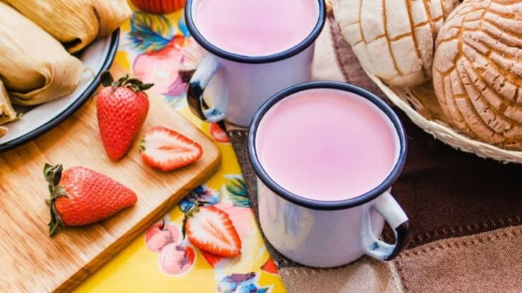

- 4 tazas de fresas lavadas, desinfectadas y picadas
- 3 litros de leche
- 1/3 de taza de azúcar
- 2 cucharadas de fécula de maíz
Atole de fresa
- Calentar la leche con el azúcar a fuego medio, retirar cuando haya hervido.
- Medir 1 litro de leche y con ella licua las fresas.
- Cuela en una olla e incorporar el resto de la leche y cocina a fuego medio.
- Aparte, disuelve la fécula en 4 cucharadas de agua fría, agrégala a la olla y cuando espese ligeramente, retira de la estufa y sirve.